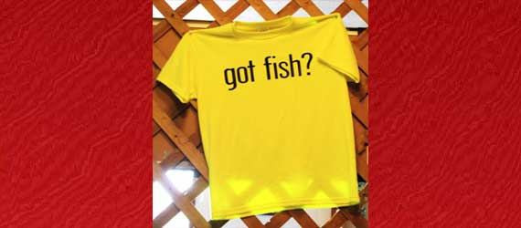
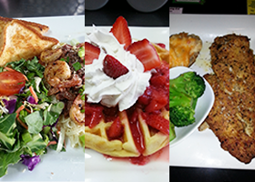

Mountain Home, Arkansas · Since 2008
Skipper's Restaurant
Skipper's Restaurant is a family owned and operated restaurant in Mountain Home, Arkansas, established in 2008. Stop by for breakfast, lunch or dinner, and try the local favorites: Famous Catfish, Broasted Chicken, or our Country Ham and Eggs!

We've Got Fish!
We've GOT FISH at Skipper's!
Skipper's Restaurant is a family owned and operated restaurant in Mountain Home, Arkansas, established in 2008. Stop by for breakfast, lunch or dinner, and try the local favorites: Famous Catfish, Broasted Chicken, or our Country Ham and Eggs!
Good Food
Fresh, Homestyle Cooking
